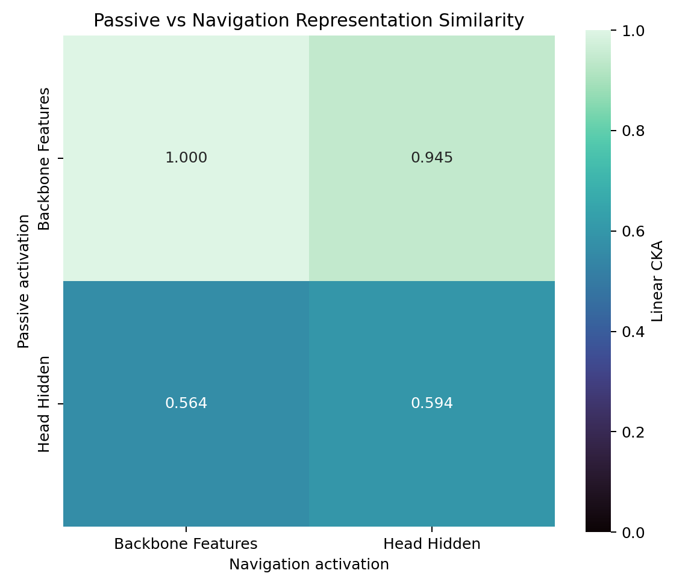
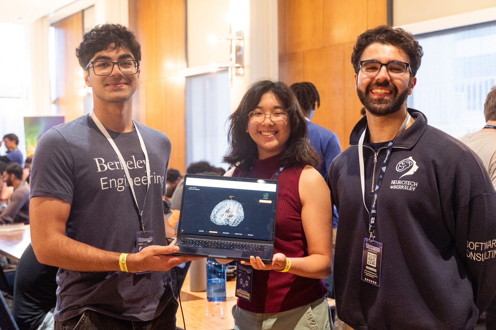
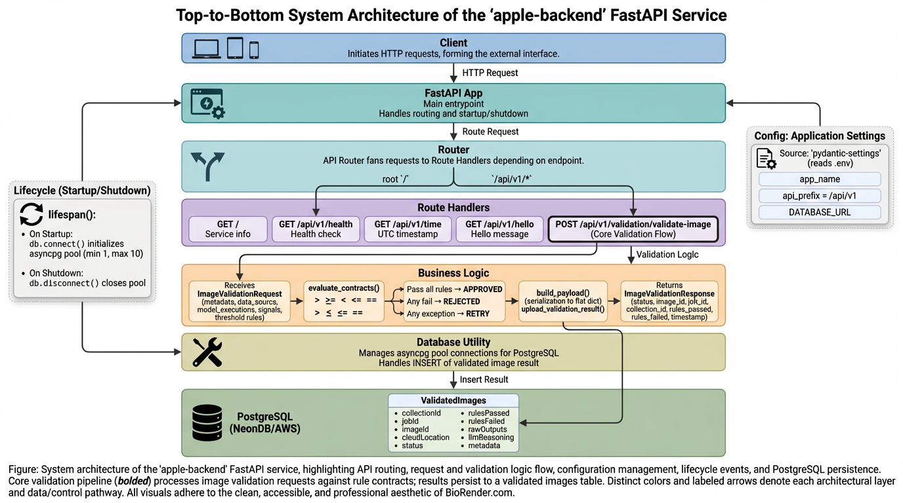
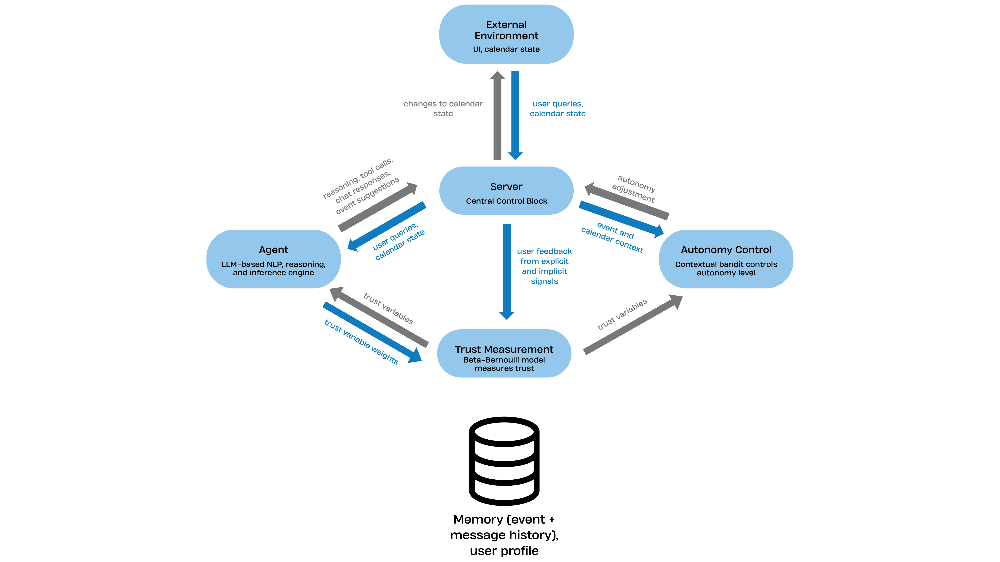
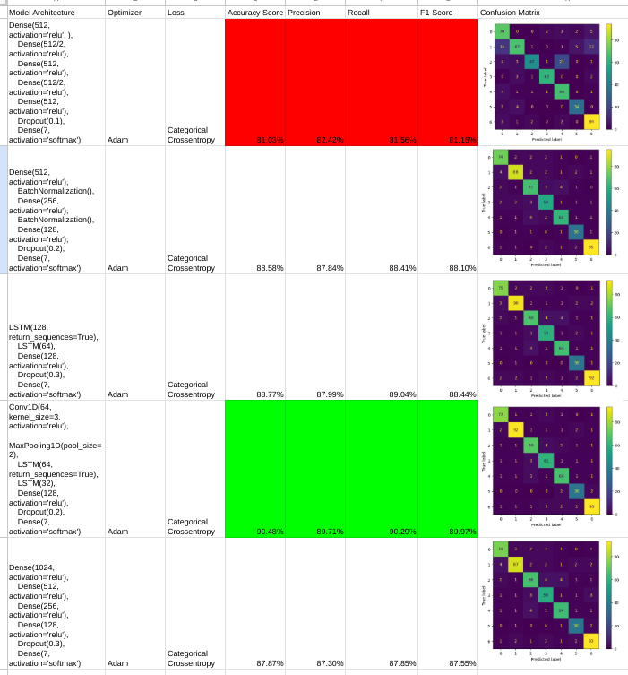
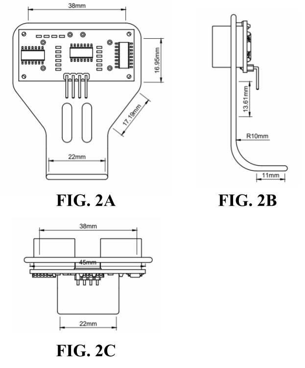
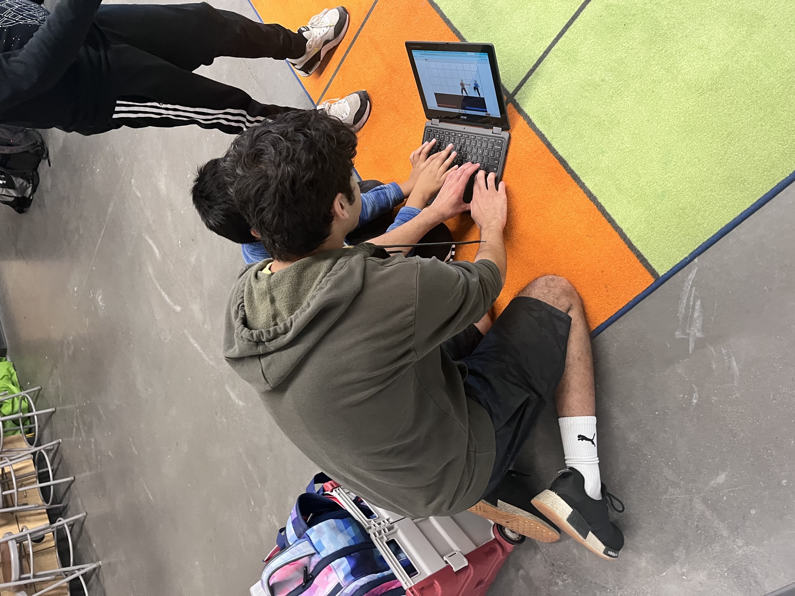
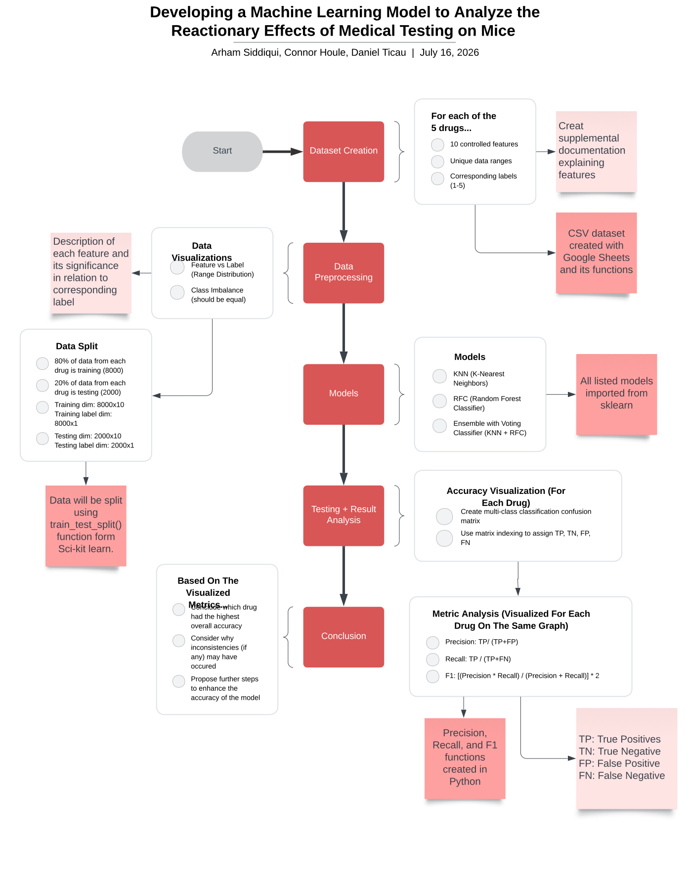
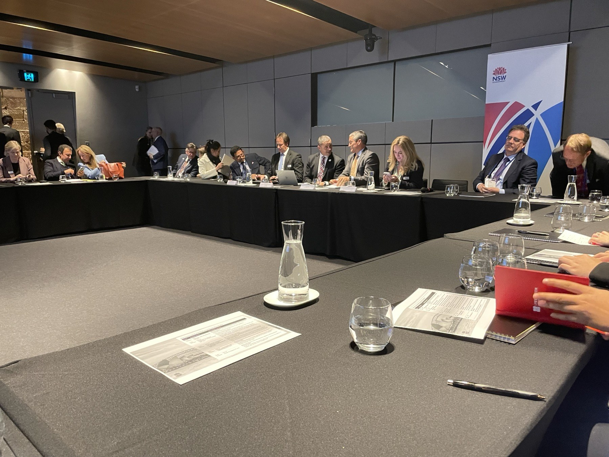
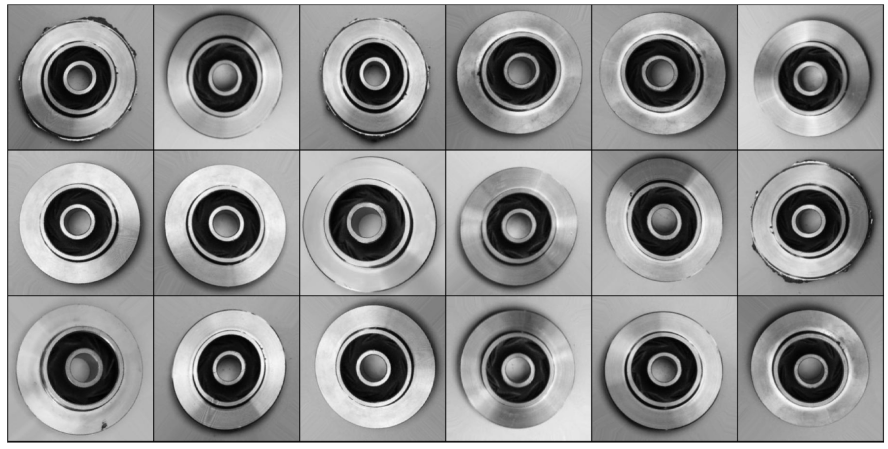

Projects
Category
 Silent Speech Decoding
Silent Speech Decoding

TaskShift
Curriculearn
FastAPI Image Validation Backend
Gemini + Hybrid LinUCB Calendar Agent
Spatial-Temporal Audio Modeling
Overhead Movement Alarm Radar
CometKitz Robotics Kits Program Santa Clara Coding Association
Santa Clara Coding Association
 Assistive Navigation Systems
Assistive Navigation Systems

Reactionary Effects of Medical Testing on Rodents
USA-Australia Climate Technology MOU Phishing Risk Classification
Phishing Risk Classification

Casting Defect Detection